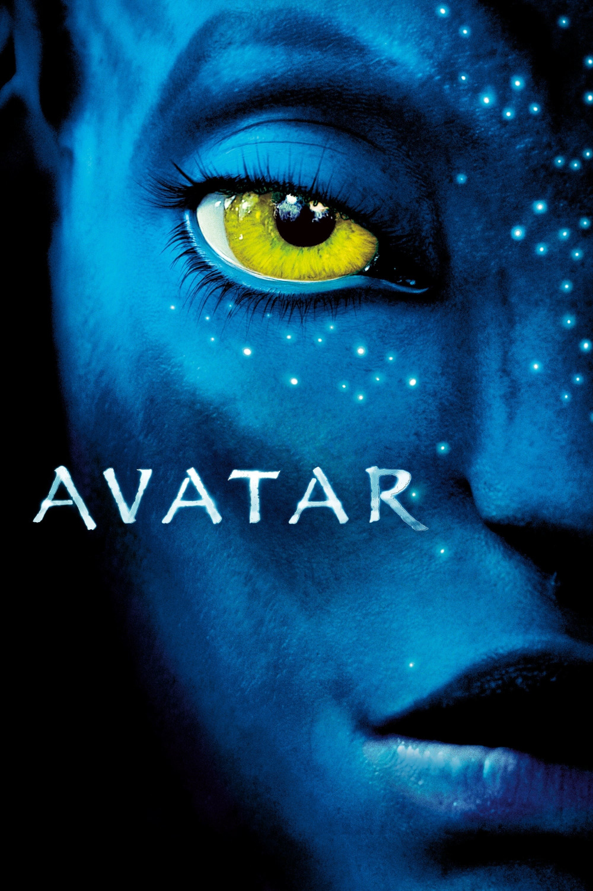

Мировая премьера: 18 декабря 2009
Слоган: Это новый мир.
Сюжет: Джейк Салли – бывший морской пехотинец, прикованный к инвалидному креслу. Он получает задание совершить путешествие в несколько световых лет к базе землян на планете Пандора, где корпорации добывают редкий минерал, имеющий огромное значение для выхода Земли из энергетического кризиса. Поскольку воздух Пандоры токсичен, была создана программа "Аватар", в которой сознание людей подключается к аватару, биологическому телу с дистанционным управлением, помогающему находиться в этой губительной атмосфере. Аватары – созданные при помощи генной инженерии гибриды, полученные комбинированием человеческой ДНК и ДНК коренных жителей планеты Пандоры, на'ви. Получив второе рождение в виде аватара, Джейк снова может ходить. Его миссия – уничтожить на'ви, которые стали основным препятствием для добычи ценной руды. Но прекрасная аборигенка Нейтири спасает Джейку жизнь, и после этого всё меняется...
Режиссёр: Джеймс Кэмерон
Серия: Аватар
В ролях: |
Сэм Уортингтон | Джейк Салли / Том Салли |
| Зои Салдана | Нейтири | |
| Сигурни Уивер | Доктор Грейс Огустин | |
| Стивен Лэнг | Полковник Майлз Куоритч | |
| Лас Алонсо | Цу'тэй | |
| Мишель Родригес | Труди Шакон | |
| Джованни Рибизи | Паркер Селфридж | |
| Джоэль Дэвид Мур | Доктор Норм Спеллман | |
| Си-Си-Эйч Паундер | Мо'ат | |
| Уэс Стьюди | Эйтукан | |
| Дилип Рао | Доктор Макс Пател | |
| Мэтт Джеральд | Капрал Лайл Уэйнфлит |
Бюджет: $ 237 млн.
Кассовые сборы в США: $ 785 млн.
Кассовые сборы в мире: $ 2 924 млн.
Продолжительность: 2 ч. 52 мин.
Рейтинг: 7.9